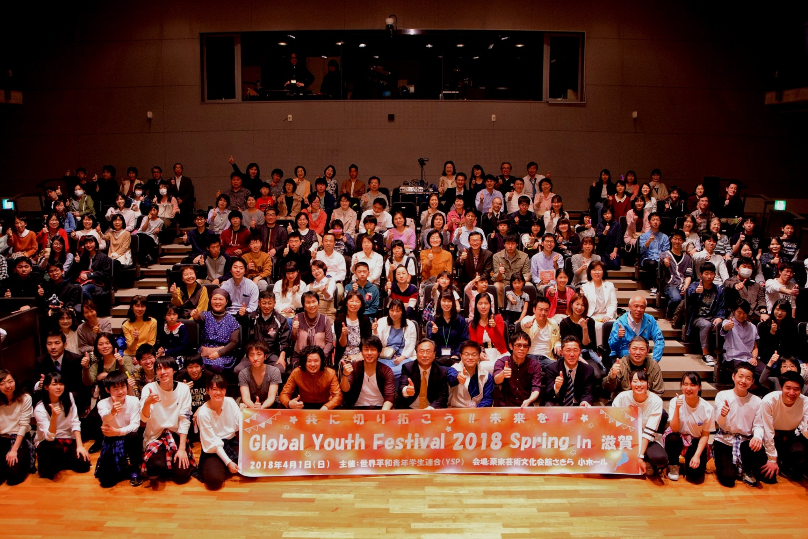

私たちの活動について

世界平和青年学生連合・滋賀連合会とは？
世界平和青年学生連合(YSP) 滋賀連合会は、滋賀の地域性を活かした人格教育プログラムと、SDGsをサポートする社会貢献活動を通して、地元愛を育み地域活性化の一役を担える人材育成に取り組み、平和世界実現に向けて国際的な活動を推進しているNGO団体です。
目標(GOAL)
- 輝く青年学生の育成
- 地域社会や県・国の課題解決への貢献(国連のSDGsへの取り組み)
- 有識者と青年平和大使のネットワーク作り